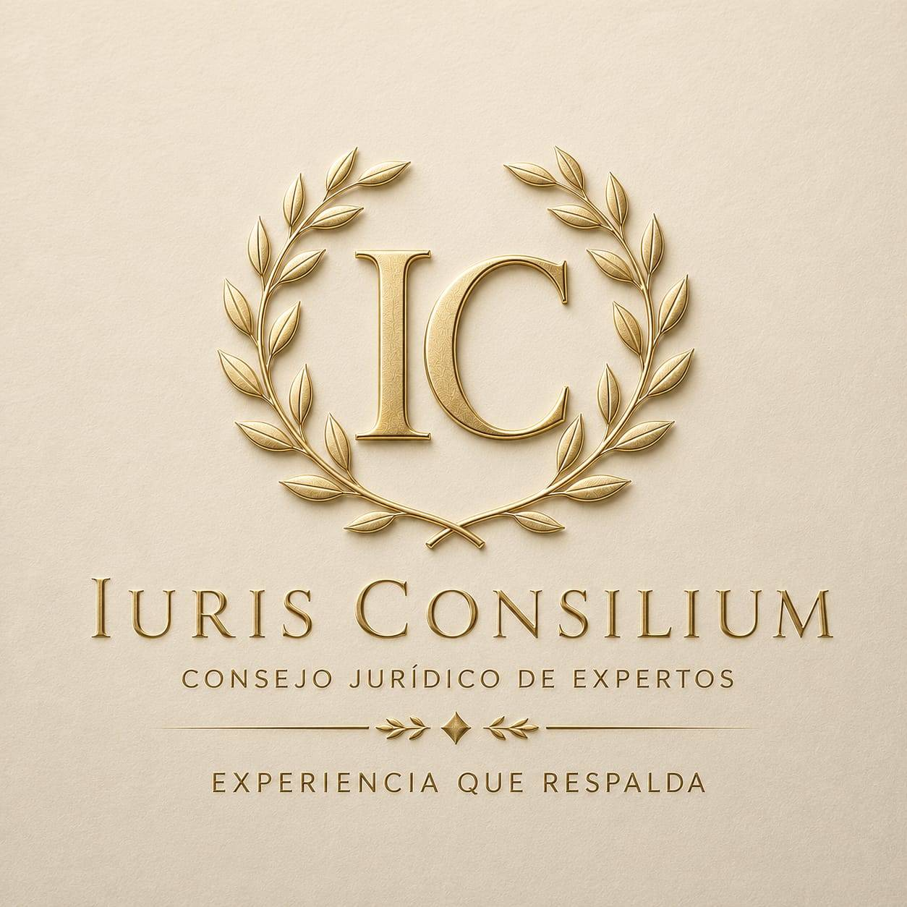
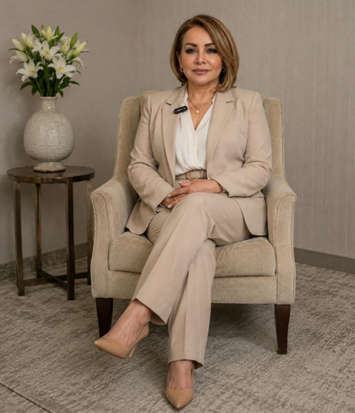

Iuris Consilium"Experiencia que respalda"
No ofrecemos opiniones generales; entregamos dictámenes y soluciones basados en un análisis técnico jurídico exhaustivo e interdisciplinario.
Agenda una ConsultaEn Iuris Consilium creemos que la aplicación de normas es una herramienta para proteger derechos, resolver conflictos y generar soluciones que impulsen el crecimiento de las personas y las organizaciones.
Somos un Consejo Jurídico de Expertas integrado por profesionales con amplia experiencia en distintas ramas del derecho, comprometidos con brindar asesoría estratégica, representación legal y acompañamiento integral, siempre con ética, excelencia y un profundo sentido de responsabilidad.
Brindar soluciones jurídicas integrales, estratégicas y personalizadas, defendiendo los intereses de nuestros clientes con excelencia, ética y compromiso.
Ser un consejo jurídico referente por su excelencia, solidez y confianza.

Abogada y Notaria | Doctora en Derecho del Trabajo, Previsión Social y Derechos Humanos
Jurista guatemalteca, magistrada, académica e investigadora con más de 28 años de trayectoria en administración de justicia y derechos humanos.
Abogada y Notaria | Magíster en Derecho de las Mujeres, Género y Acceso a la Justicia
Con más de 45 años de trayectoria al servicio de la justicia. Ex subdirectora del Registro de Ciudadanos del TSE y destacada carrera en el MP.
Abogada y Notaria | Magíster en Derecho Procesal Constitucional
Sólida trayectoria en el ámbito público y asesoría jurídica especializada con enfoque en Derecho Electoral, Constitucional, Civil y Laboral.
Abogada y Notaria
Experiencia en magistratura de salas de apelación, litigio estratégico y análisis de procesos laborales, penales y amparos.